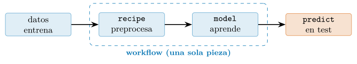
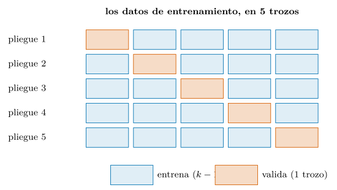
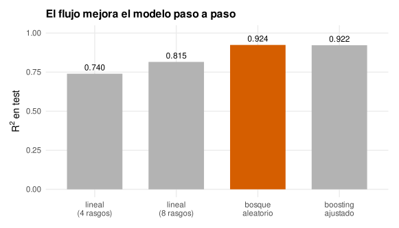
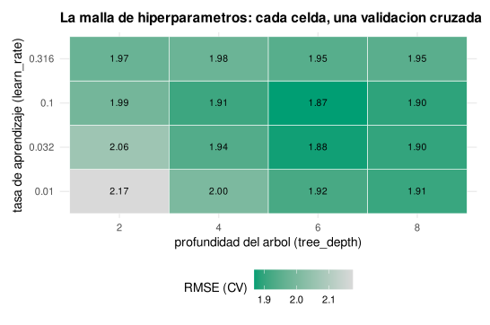
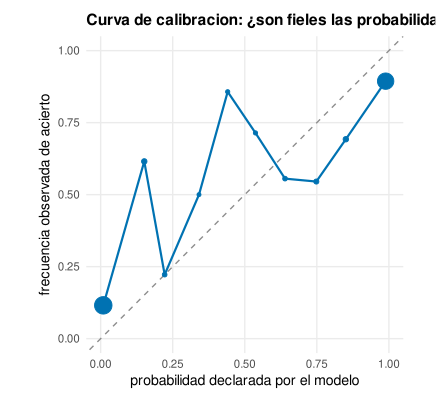
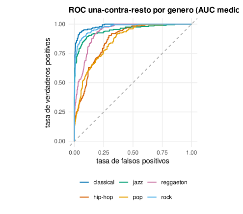
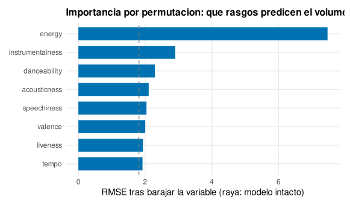
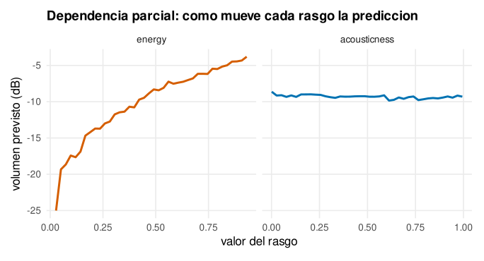

Capítulo 14. Modelado tabular reproducible con tidymodels
▶ Ejecutar este capítulo en Binder
La primera vez que se abre, Binder construye el entorno en la nube (unos 10-20 min); verás una pantalla de progreso. Después queda en caché y abre en segundos. Si parece que no responde, espera a que termine de construirse o vuelve a intentarlo.
El capítulo anterior puso los cimientos del aprendizaje automático construyendo los modelos casi a mano, para ver qué guardan dentro. Este los organiza en un flujo de trabajo de nivel profesional. La diferencia no es menor: un modelo suelto —ajustado, medido, olvidado— es un ejercicio; un flujo de trabajo reproducible —que preprocesa sin fugas, valida con honradez, ajusta sus hiperparámetros, se evalúa una sola vez y se puede volver a ejecutar mañana con idéntico resultado— es lo que separa el aprendizaje automático de juguete del que se lleva a producción y del que se firma. Todo el capítulo gira en torno a una colección de paquetes de R que hablan el mismo idioma, tidymodels (Kuhn y Silge 2022; Kuhn y Wickham 2020), y a un principio que la recorre entera: cada decisión que aprende de los datos debe aprender solo del entrenamiento, o el resultado miente.
tidymodels es a la modelización lo que el tidyverse (cap. 8) era al análisis tabular y ggplot2 (cap. 12) a los gráficos: no una función por algoritmo, sino una gramática de piezas que se combinan. Cinco paquetes forman su columna, y conviene nombrarlos de entrada porque estructuran el capítulo: parsnip da una interfaz única a todos los modelos; recipes declara el preprocesado como una receta que se aprende; workflows encadena receta y modelo en una sola pieza; rsample parte los datos para validar; tune busca los mejores hiperparámetros; y yardstick, que ya conocemos del cap. 13, mide. Juntos convierten un análisis de modelado en un objeto de código coherente, auditable y reproducible.
La palabra tabular del título tampoco es casual. Este capítulo se centra deliberadamente en datos de filas y columnas —una observación por fila, una variable por columna— porque son, con enorme diferencia, los que ocupan a la mayoría de los científicos de datos: las ventas de una empresa, los pacientes de un hospital, los votantes de una encuesta, las pistas de un catálogo. No son los datos que llenan titulares —esos son las imágenes y el texto de los modelos generativos— pero sí los que llenan las jornadas laborales, y para ellos el flujo de este capítulo no es una opción más, sino la forma madura de trabajar. Que lo tabular sea a la vez lo más común y lo menos glamuroso es una constante del oficio, y conviene abrazarla sin complejos: dominar el modelado tabular reproducible es una competencia más valiosa, en el día a día, que saber entrenar la última arquitectura de moda que casi nadie usará.
Seguiremos con el mismo catálogo de música —la rebanada de seis géneros del cap. 13, 5 916 pistas— y el mismo doble problema: predecir el volumen (regresión) y adivinar el género (clasificación). Pero el foco ya no es qué modelo, sino cómo se construye un modelo bien hecho: la mecánica del oficio, desde la especificación hasta la interpretación de la caja negra. Ese cambio de foco —de qué a cómo— es lo que separa a quien sabe llamar a un algoritmo de quien sabe construir un modelo fiable, y es, con diferencia, lo más valioso que estos dos capítulos pueden dejar. Los algoritmos concretos cambian con la moda —el boosting de hoy no era el rey hace quince años, y quizá no lo sea dentro de otros quince—; el método —partir con honradez, preprocesar sin fuga, validar sin tocar el test, medir con la métrica correcta, interpretar con prudencia— no caduca, porque no depende de ningún algoritmo sino de la lógica de aprender de unos datos para predecir en otros. Quien domina el cómo sobrevive a cualquier cambio del qué; quien solo memorizó la API del modelo de moda queda obsoleto con él. Este capítulo apuesta, deliberadamente, por lo que perdura.
Vale la pena precisar qué hace reproducible a un flujo, porque es la palabra del título y no es obvia. Un análisis es reproducible cuando cualquiera —o uno mismo, meses después— obtiene exactamente el mismo resultado a partir de los mismos datos y el mismo código. Suena trivial y es sorprendentemente difícil: basta una semilla sin fijar, un paso de preprocesado hecho a mano en la consola y no en el script, o una versión de un paquete que cambió, para que los números dejen de cuadrar. El modelado lo agrava, porque encadena muchas decisiones —partir, preprocesar, remuestrear, ajustar— y cada una es una oportunidad de irreproducibilidad. La respuesta de tidymodels es hacer de todo el flujo código —no gestos manuales— con las decisiones capturadas en objetos versionables y el azar fijado por semillas, de modo que la reproducibilidad deja de depender de la memoria o la disciplina del analista y pasa a estar garantizada por la estructura. Ese es el sentido preciso del título: no solo modelar bien, sino modelar de forma que el resultado se sostenga cuando otro lo repita.
Todo es un modelo: la interfaz de parsnip
Si una idea explica por qué tidymodels cunde, es la misma que hizo grande al tidyverse: la uniformidad. En R base, cada algoritmo de modelado trae su propia sintaxis —lm para la regresión lineal, rpart para árboles, ranger para bosques, xgboost con su matriz especial—, con argumentos distintos, formas distintas de recibir los datos y salidas distintas de las que extraer la predicción. parsnip pone sobre todas ellas una interfaz común, de modo que especificar un modelo se separa en tres decisiones ortogonales: el tipo de modelo (qué algoritmo: linear_reg, decision_tree, rand_forest, boost_tree), el motor (set_engine: qué implementación concreta lo calcula) y el modo (set_mode: regresión o clasificación). Un modelo es una receta de tres líneas antes de ver un solo dato:
library(tidymodels)
# la rebanada y la particion del cap. 13, retomadas
generos <- c("pop", "rock", "classical", "hip-hop", "jazz", "reggaeton")
sub <- musica |> filter(track_genre %in% generos) |>
mutate(track_genre = factor(track_genre, levels = generos))
set.seed(2026)
division <- initial_split(sub, prop = 0.8, strata = track_genre)
entrena <- training(division); prueba <- testing(division)
lineal <- linear_reg() # tipo; motor por defecto: "lm"
arbol <- decision_tree(mode = "regression") |> set_engine("rpart")
bosque <- rand_forest(trees = 500, mode = "regression") |> set_engine("ranger")Esa separación es más profunda de lo que parece. El tipo describe la familia de funciones del cap. 13 —qué forma puede tomar el modelo— con un vocabulario independiente de quién lo implemente; el motor elige la implementación —un mismo bosque aleatorio lo pueden calcular ranger o randomForest, y cambiar de uno a otro es una palabra—; el modo fija si predice un número o una clase. El catálogo de tipos es amplio —regresión lineal y logística, árboles, bosques, boosting, redes, vecinos más cercanos, máquinas de vectores soporte, y más—, y todos se especifican igual, con la misma tríada tipo/motor/modo; aprender uno es haber aprendido la forma de todos. El modo merece una nota: muchos tipos sirven tanto para regresión como para clasificación —un árbol o un boosting predicen igual un número que una clase—, y es set_mode quien lo decide, cambiando qué se optimiza por dentro (el error cuadrático o la entropía cruzada, cap. 13) sin que la especificación cambie por fuera. Esa ortogonalidad —el mismo tipo, dos modos— es la que permite, en la §14.7, pasar de predecir el volumen a adivinar el género cambiando una palabra.
Una vez especificado, el modelo se ajusta y predice con dos verbos que no cambian nunca —fit y predict—, los mismos que el cap. 6 propuso como buena práctica de diseño y que tidymodels convierte aquí en el andamiaje de todo un ecosistema:
aj <- lineal |> fit(loudness ~ danceability + energy + acousticness + valence,
data = entrena)
predict(aj, prueba) # devuelve un tibble con columna .pred
#> # A tibble: 1,185 x 1
#> .pred
#> <dbl>
#> 1 -8.42
#> ...fit recibe la fórmula del cap. 6 —loudness ~ …, «el volumen se explica por»— y predict devuelve siempre un tibble con una columna .pred, no un vector suelto: una salida ordenada que encaja sin fricción con dplyr y yardstick. Ese detalle —que predict devuelva siempre un tibble de forma predecible, con .pred para regresión, .pred_class y .pred_<clase> para clasificación— puede parecer menor, pero es parte de lo que hace fluido el flujo. En R base, cada función de predicción devuelve algo distinto —un vector, una matriz, una lista con nombres propios de cada paquete—, y extraer la predicción y alinearla con la verdad para medirla exige recordar la peculiaridad de cada una. parsnip impone una forma única de salida, de modo que el código que sigue a un predict —juntar con la verdad, pasar a yardstick, dibujar— es idéntico sea cual sea el modelo. La uniformidad no está solo en la entrada (la especificación) sino también en la salida, y esa doble regularidad es la que permite escribir una función de evaluación que sirve para todos, como la que sigue. La virtud se ve al cambiar de modelo. Sustituir la regresión lineal por un árbol de decisión —un modelo de naturaleza radicalmente distinta— cuesta cambiar la especificación y nada más; el resto del código —la fórmula, el fit, el predict, la evaluación— queda intacto. Es el polimorfismo del cap. 6 llevado al modelado: como todo es un modelo con la misma interfaz, explorar alternativas es barato, y esa baratura es la que invita a probar en vez de casarse con el primer algoritmo. Y esa invitación importa más de lo que parece, porque el sesgo natural del que modela es quedarse con lo conocido: si probar un modelo distinto costara reescribir medio análisis, casi nadie lo haría, y se publicarían resultados con el primer algoritmo que funcionó razonablemente en vez de con el mejor. Bajar el coste de explorar cambia el comportamiento: cuando cambiar de modelo es una línea, se prueban cinco, y el que se elige es el que ganó una comparación, no el que llegó primero. La ergonomía de una herramienta no es un lujo cosmético; moldea las decisiones de quien la usa, y una que hace fácil lo correcto —aquí, comparar en vez de conformarse— produce mejor trabajo casi sin que uno se dé cuenta.
library(yardstick)
evaluar <- function(spec) {
aj <- spec |> fit(loudness ~ danceability + energy + acousticness + valence,
entrena)
pred <- predict(aj, prueba) |> bind_cols(prueba["loudness"])
rsq(pred, truth = loudness, estimate = .pred)$.estimate
}
evaluar(linear_reg()) #> 0.740
evaluar(decision_tree(mode = "regression")) #> 0.837El árbol, con solo cambiar la especificación, sube el \(R^2\) de \(0{,}740\) a \(0{,}837\). No es la última palabra —un árbol suelto es inestable, y enseguida veremos modelos mejores—, pero la lección es la del capítulo: con una interfaz común, comparar es tan barato que no hay excusa para no hacerlo.
Falta, eso sí, la pieza que hace honesto todo lo demás —el preprocesado sin fuga— y a ella dedicamos la sección siguiente.
El preprocesado también se aprende: recipes
Aquí está la idea que tidymodels defiende con más insistencia, y la que más errores previene. El preprocesado —estandarizar, imputar ausentes, codificar categorías, crear rasgos— no es una manipulación inocente que se hace una vez sobre toda la tabla y ya. Es una operación que aprende de los datos: estandarizar necesita la media y la desviación de cada columna, imputar necesita la mediana, codificar categorías raras necesita saber cuáles son raras. Y todo lo que se aprende de los datos está sujeto a la regla de oro del cap. 13: debe aprenderse solo del entrenamiento. Conviene detenerse en por qué esto se pasa por alto tan a menudo, porque no es por ignorancia sino por una intuición equivocada muy natural. El preprocesado parece una limpieza neutral, previa al modelado, del mismo tipo que corregir una errata o convertir una unidad: algo que se hace a los datos «en bruto» antes de que empiece el análisis de verdad. Esa imagen —preprocesado como higiene inocente— es la trampa. Estandarizar no es corregir una errata: es estimar dos parámetros (la media y la desviación) a partir de los datos, exactamente como un modelo estima sus coeficientes, y usarlos luego para transformar. Es modelado, aunque no lo parezca, y por tanto está sujeto a las mismas reglas. Reconocer que el preprocesado es aprendizaje —no limpieza— es el cambio de mentalidad que recipes obliga a hacer, y una vez hecho, la regla anti-fuga deja de parecer una pedantería y se ve como lo que es: la consecuencia inevitable de que preparar los datos ya es aprender de ellos. Calcular la media sobre la tabla entera —entrenamiento y test juntos— antes de partir filtra información del test hacia el modelo: es la fuga de datos del cap. 10, sutil porque no rompe nada y silenciosa porque infla el resultado sin avisar.
La receta como plano del preprocesado
Conviene ver el error en su forma más común, porque es tentador y parece inofensivo. Uno lee los datos, los estandariza «para dejarlos listos» —scale sobre toda la tabla—, y luego parte en train y test. Parece un preparativo neutral, pero no lo es: la media y la desviación que la estandarización usó se calcularon con el test dentro, así que cada valor del test se normalizó con información que incluía al propio test, y esa información se ha colado en el train por la puerta de la media compartida. El efecto es pequeño para la estandarización —la media apenas cambia por unas filas más— pero el patrón es el veneno: cualquier paso que aprenda de los datos y se ejecute antes de partir filtra el futuro, y con pasos más agresivos —seleccionar rasgos, imputar con un modelo, agrupar categorías por su relación con el objetivo— el espejismo puede ser enorme (recuadro anterior). La regla que recipes vuelve automática: primero se parte, y todo lo que aprende de los datos aprende solo después, y solo del train.
La solución de recipes es tratar el preprocesado como un modelo en miniatura: se declara qué pasos aplicar (la receta), se aprenden sus parámetros del entrenamiento (prep) y se aplican a datos nuevos (bake), con la misma disciplina ajustar/aplicar que separó el mundo del entrenamiento del de la evaluación. Una receta se escribe como una tubería de pasos step_* sobre una fórmula, seleccionando columnas con los mismos ayudantes de dplyr (all_numeric_predictors, all_nominal_predictors):
receta <- recipe(loudness ~ ., data = entrena) |>
step_impute_median(all_numeric_predictors()) |> # imputa (mediana del TRAIN)
step_other(all_nominal_predictors(), threshold = 0.01) |> # agrupa raras
step_dummy(all_nominal_predictors()) |> # -> indicadores 0/1
step_normalize(all_numeric_predictors()) |> # centra y escala (TRAIN)
step_zv(all_predictors()) # quita varianza ceroCada paso encapsula un fragmento de conocimiento que se extrae del entrenamiento y se congela: las medianas de imputación, las categorías frecuentes, los centros y escalas de normalización. Al aplicar la receta al test, recipes usa esos valores aprendidos, nunca los del test —la puerta a la fuga queda cerrada por construcción, no por vigilancia—. Y la receta es un objeto: se guarda, se versiona, se reutiliza, y documenta exactamente qué transformación sufrieron los datos, algo que un puñado de líneas sueltas de dplyr dispersas por el análisis nunca deja tan claro. Aquí conviene una aclaración, porque el cap. 8 enseñó a transformar datos con dplyr y podría parecer que recipes lo duplica. No lo duplica: cumplen papeles distintos y complementarios. dplyr es para la transformación exploratoria y única —limpiar, reformar, agregar los datos una vez, antes de partir—, operaciones que no aprenden parámetros del objetivo y valen igual para todas las filas. recipes es para el preprocesado del modelo —el que sí aprende (medias, escalas, categorías) y que debe aprenderse solo del train y reaplicarse al test y a cada dato nuevo—. La regla práctica: lo que harías igual con o sin modelo, y una sola vez, va en dplyr; lo que el modelo necesita y que aprende de los datos, va en la receta. Confundirlos —meter en dplyr, antes de partir, un paso que aprende del objetivo— es, otra vez, la puerta de la fuga.
Un detalle de la receta resuelve un problema práctico frecuente: qué hacer con columnas que no son ni predictores ni objetivo —un identificador de pista, un nombre, una fecha que solo sirve de etiqueta—. Quitarlas del data frame las perdería para siempre; dejarlas como predictores metería basura en el modelo (un identificador «predice» de memoria, la fuga perfecta). La solución de recipes son los roles: update_role(track_id, new_role = "id") marca esa columna como identificador, de modo que la receta la conserva —viaja con los datos, útil para rastrear una predicción hasta su pista— pero no la ofrece al modelo. Es una distinción que el análisis con dplyr suelto no tiene forma limpia de expresar, y que evita uno de los errores de fuga más embarazosos: entrenar sobre un identificador y creerse el acierto perfecto que en realidad es memorización.
El catálogo de pasos es amplio y va mucho más allá de la limpieza. Hay pasos de transformación (step_log, step_YeoJohnson para enderezar colas), de ingeniería de características (step_poly para términos polinómicos, step_interact para productos entre rasgos, step_date para descomponer una fecha en día de la semana y mes), de reducción (step_pca para condensar rasgos correlacionados en componentes) y de codificación avanzada (step_dummy para indicadores, step_novel para categorías no vistas en el train). Esa es la palanca que el cap. 13 llamó ingeniería de características, y aquí tiene su lugar natural: declarada como pasos de la receta, se aprende del train y se aplica sin fuga, en vez de programarse a mano con el riesgo de filtrar el test. Un buen rasgo, se dijo, vale por diez capas de red; recipes es donde ese buen rasgo se construye con garantías.
El orden de los pasos importa, y es una fuente de errores sutiles. Los pasos se aplican en secuencia, y cada uno ve el resultado del anterior: imputar debe ir antes de normalizar (no se puede escalar una columna con huecos), codificar las categorías en indicadores debe ir antes de cualquier paso numérico que quiera incluirlos, y quitar columnas de varianza cero conviene al final, cuando ya se ve cuáles quedaron constantes. La receta, al forzar a declarar ese orden explícitamente, convierte en visible una secuencia que en código suelto quedaría implícita y frágil; y como es un objeto, ese orden queda documentado y se reproduce igual siempre.
El workflow: receta y modelo, una sola pieza
La receta prepara los datos y el modelo aprende de ellos, y la tentación es ejecutarlos por separado. Es justo lo que no hay que hacer, porque abre grietas por donde se cuela la fuga: basta olvidar aplicar al test exactamente la misma receta aprendida en el train, o hacerlo en distinto orden, para contaminar el resultado. El paquete workflows sella esa grieta: encadena la receta y el modelo en un único objeto —el workflow— que se ajusta y predice como si fuera un modelo más (figura 14.1). Al llamar a fit sobre el workflow, recipes aprende sus parámetros del entrenamiento y el modelo se ajusta sobre los datos ya preparados, todo en un paso indivisible; al llamar a predict, la misma receta transforma los datos nuevos antes de que el modelo los vea. No hay resquicio por donde el test se filtre.
El workflow, además de cerrar la fuga, resuelve un problema práctico que aparece en cuanto un modelo sale del análisis: el de empaquetar todo lo necesario para predecir en un solo objeto. Un modelo suelto no basta para predecir sobre datos nuevos —hace falta también la receta que los transforma igual que al entrenar, y aplicarla en el orden correcto—, y mantener modelo y preprocesado como piezas separadas es una invitación a que se desincronicen: se despliega el modelo nuevo con la receta vieja, o al revés, y las predicciones se corrompen sin que nada falle. El workflow entrenado lleva ambos dentro, sellados y sincronizados: es una unidad autónoma que recibe datos crudos y devuelve predicciones, sin que quien lo usa tenga que saber qué preprocesado esconde. Esa autocontención es lo que lo hace desplegable (§14.9) y lo que convierte «poner un modelo en producción» de un ensamblaje frágil de piezas sueltas en el traslado de un solo objeto. La misma idea —encapsular para no equivocarse— que hace bueno al workflow como garantía anti-fuga lo hace bueno como unidad de despliegue.

library(workflows)
flujo <- workflow() |>
add_recipe(receta) |> # el preprocesado
add_model(linear_reg()) # el modelo
aj <- fit(flujo, entrena) # receta y modelo aprenden, en un paso
pred <- predict(aj, prueba) |> bind_cols(prueba["loudness"])
metric_set(rsq, mae)(pred, truth = loudness, estimate = .pred)
#> rsq 0.815 mae 1.966Con los ocho rasgos numéricos normalizados dentro del workflow, la regresión lineal sube a un \(R^2\) de \(0{,}815\) —frente al \(0{,}740\) de los cuatro rasgos crudos del principio—, y todo sin una sola línea de preprocesado manual que pudiera filtrar el test. Ese salto —más de siete puntos— viene en parte de usar más rasgos y en parte del preprocesado, y conviene subrayar la lección: buena parte de lo que separa un modelo mediocre de uno bueno no está en el algoritmo, sino en cómo se preparan los datos que lo alimentan. Un modelo potente sobre datos mal preparados rinde menos que un modelo humilde sobre datos bien tratados, y por eso la receta —la parte menos glamurosa del flujo— es a menudo donde más se gana. La normalización aquí apenas cambia el ajuste de una regresión lineal (que es indiferente a la escala), pero será decisiva para los modelos que sí dependen de ella, y tenerla en la receta desde el principio significa que cambiar de modelo no obliga a repensar el preprocesado: el workflow absorbe esa coordinación. El workflow es, a partir de aquí, la unidad de trabajo del capítulo: todo lo que sigue —validar, ajustar, evaluar, interpretar— opera sobre él, no sobre el modelo desnudo.
Validar con honradez: la validación cruzada
El cap. 13 presentó la partición en dos —entrenamiento y test— y la validación cruzada como idea. Aquí la convertimos en la herramienta central del flujo, porque de ella depende toda decisión honesta. El problema es este: durante el desarrollo tomamos decenas de decisiones —qué modelo, qué receta, qué hiperparámetros—, y cada una necesita una medida para compararse. Si esa medida sale del test, el test queda contaminado y deja de ser el futuro; si sale del entrenamiento, premia siempre al modelo que más memoriza. Hace falta una tercera fuente de juicio que no toque ninguno de los dos, y esa es la validación cruzada, que se practica dentro del entrenamiento.
Tres conjuntos, tres papeles
Conviene fijar el reparto de papeles, porque confundirlos es el error metodológico más común. El entrenamiento sirve para ajustar los parámetros del modelo. Una porción de él, la validación, sirve para decidir entre configuraciones —qué modelo, qué hiperparámetro—. Y el test sirve para estimar, una sola vez y al final, cómo se comportará el modelo elegido en datos nuevos. Son tres funciones distintas que no deben solaparse: usar el test para decidir lo quema, y usar el entrenamiento para juzgar engaña. La validación cruzada automatiza el papel del medio sin desperdiciar datos: en lugar de apartar una validación fija —que se llevaría un trozo del ya escaso entrenamiento—, rota el papel de validación por todos los datos (figura 14.2).
La razón de que hagan falta tres conjuntos, y no dos, es sutil y se olvida a menudo. Uno podría pensar que basta entrenar en uno y evaluar en otro; el problema aparece en cuanto se prueban varias configuraciones y se elige la mejor por su medida en ese segundo conjunto. Al elegir la mejor de muchas, esa medida queda optimizada —se ha mirado el conjunto de evaluación repetidamente, una decisión por cada configuración— y deja de estimar el rendimiento real, que será peor en datos verdaderamente nuevos. Es una fuga por la puerta de atrás: no se entrenó con el test, pero se decidió con él, y decidir con datos también los gasta. De ahí los tres papeles: entrenar (con el train), decidir (con la validación, dentro del train) y estimar sin haber decidido nada con ellos (con el test). Confundir el segundo con el tercero —elegir el modelo mirando el test— es el pecado metodológico que produce los modelos que brillan en el informe y decepcionan en producción.

En rsample y tune
Con tidymodels, evaluar un workflow por validación cruzada es vfold_cv (crea los pliegues) más fit_resamples (ajusta y evalúa en cada uno). El resultado no es un número, sino una distribución: una media y su error típico, que cuantifica cuánto cambiaría la estimación con otro reparto —la incertidumbre que una sola partición esconde—.
library(rsample)
set.seed(2026)
pliegues <- vfold_cv(entrena, v = 5) # 5 trozos del train
res <- fit_resamples(flujo, pliegues,
metrics = metric_set(rmse, rsq, mae))
collect_metrics(res)
#> .metric mean std_err
#> mae 1.94 0.0203
#> rmse 2.77 0.0519
#> rsq 0.815 0.00229El \(R^2\) de validación cruzada, \(0{,}815 \pm 0{,}002\), coincide con el de test —señal de que el modelo lineal es estable— y su error típico, minúsculo, dice que la estimación es fiable: con otro reparto de los pliegues apenas cambiaría. Es dentro de esta maquinaria —y solo dentro— donde se toman todas las decisiones de modelado del capítulo. Vale la pena insistir en un punto que parece contradictorio: la validación cruzada no produce el modelo final. Sus \(k\) ajustes son desechables —sirven para estimar cómo de bueno es un método o una configuración, no para quedárselos—. Una vez que la validación cruzada ha dicho qué configuración es mejor, esa configuración se reentrena sobre todo el entrenamiento junto (más datos, mejor modelo), y ese es el modelo que se evalúa en el test y se despliega. Los modelos de los pliegues cumplieron su función —dar una medida honesta— y se tiran. Quien no entiende esto a veces guarda uno de los modelos de la validación cruzada como si fuera el resultado, desperdiciando la quinta parte de sus datos; el flujo de tidymodels, con fit_resamples para estimar y last_fit para el modelo final, separa los dos papeles de forma que no se confundan. La disciplina, otra vez, es la misma: el test espera intacto; se compara y se elige con la validación cruzada; y solo cuando ya no queda nada que decidir se mira el test una última vez.
rsample ofrece variantes del reparto para situaciones que la validación cruzada simple no cubre bien, y conocerlas es parte del criterio. La estratificación (strata =) reparte cada pliegue conservando la proporción de clases o el rango del objetivo, imprescindible cuando una clase es rara o el objetivo está sesgado —de lo contrario, algún pliegue apenas incluiría casos de la categoría escasa, y su medida saldría inestable—. La validación cruzada repetida (vfold_cv(repeats = 5)) rehace los pliegues varias veces con reparticiones distintas y promedia, reduciendo la varianza de la estimación cuando los datos son pocos y un solo reparto es ruidoso. Y el remuestreo bootstrap (bootstraps()) valida sobre muestras con reemplazo, una alternativa con su propio sesgo y su propia varianza. La elección depende del tamaño y la forma de los datos, pero la regla por defecto —validación cruzada de 5 o 10 pliegues, estratificada si hay desequilibrio— cubre la inmensa mayoría de los casos. El número de pliegues es en sí un compromiso: más pliegues significan entrenar con una fracción mayor de los datos en cada uno —estimaciones menos sesgadas— pero también más ajustes que calcular y más solapamiento entre los conjuntos de entrenamiento, que correlaciona las medidas; menos pliegues, lo contrario. Cinco o diez es el punto dulce habitual, y el caso extremo —tantos pliegues como observaciones, dejando fuera una cada vez, la validación cruzada «dejando uno fuera»— rara vez compensa su coste salvo con muy pocos datos. Hay un caso especial que la validación cruzada estándar maneja mal y conviene señalar: las series temporales, donde barajar las filas rompería el orden del tiempo y dejaría al modelo «ver el futuro» para predecir el pasado —otra fuga—; ahí se usa una validación cruzada que respeta el orden (sliding_period, rolling_origin), entrenando siempre con el pasado y validando con el futuro inmediato, como la vida real exige.
Medir bien: el paquete yardstick
Hemos usado yardstick en cada sección sin detenernos en él, y merece una parada, porque medir bien es la mitad del oficio y la métrica equivocada arruina un buen modelo. yardstick es el paquete de métricas de tidymodels, y comparte su gramática: cada métrica es una función con la misma firma —recibe un tibble, la columna de verdad y la de predicción, y devuelve un valor ordenado—, de modo que combinar varias es metric_set, y todo encaja con dplyr y con la validación cruzada sin adaptadores.
Para regresión, las tres métricas del cap. 13 cubren casi todo: el rmse (penaliza los errores grandes, en unidades del objetivo), el mae (robusto, promedio del error absoluto) y el rsq (fracción de varianza explicada, sin unidades, comparable entre problemas). Para clasificación el repertorio es más rico porque hay más formas de acertar y de fallar: sobre la etiqueta, accuracy, precision, recall, f_meas y el coeficiente kap (kappa de Cohen, que corrige el acierto por el que daría el azar); sobre la probabilidad, roc_auc (capacidad de ordenar) y mn_log_loss (la entropía cruzada, que además premia la buena calibración). El kap merece una nota porque resuelve un problema real de la exactitud: con clases desiguales, acertar mucho puede ser trivial —decir siempre la mayoritaria— y la exactitud no lo delata, mientras que kappa, al descontar el acierto que daría el azar dadas las proporciones de las clases, sí lo hace, y un kappa cercano a cero avisa de que el modelo no aporta sobre adivinar la clase común. Es una de esas métricas que parecen redundantes hasta que un caso desequilibrado las hace imprescindibles, y tenerla a mano —una palabra en el metric_set— es parte de medir con cuidado. La distinción entre métricas de etiqueta y de probabilidad no es un detalle: las primeras juzgan la decisión final, las segundas la confianza que la sostiene, y un modelo puede ser bueno en unas y malo en otras.
library(yardstick)
metricas_reg <- metric_set(rmse, mae, rsq) # un conjunto reutilizable
metricas_clf <- metric_set(accuracy, f_meas, roc_auc)
# (pred = salida del modelo final de la busqueda de la seccion siguiente)
metricas_reg(pred, truth = loudness, estimate = .pred)
#> .metric .estimate
#> rmse 1.80
#> mae 1.03
#> rsq 0.922La lección de la sección es la del cap. 13 llevada a la práctica: la métrica se elige por el coste real de cada error, no por la que sale más alta, y se declara al principio —un metric_set que acompaña todo el flujo— para no caer en la tentación de escoger a posteriori la que mejor luce. Fijar la métrica antes de ver los resultados es, en el modelado, la misma honradez que prerregistrar una hipótesis antes del experimento (cap. 11): protege de engañarse a uno mismo. Cuando yardstick no trae la métrica que un problema pide —un coste asimétrico concreto, una métrica de negocio— se puede definir una a medida con la misma interfaz, y encajará en el flujo como las de serie.
Conviene una advertencia sobre la brecha entre la métrica que se optimiza y el objetivo real del proyecto, porque es una fuente de fracasos silenciosos. Un modelo optimiza la métrica que se le da, con una literalidad de genio maligno: si se le pide maximizar la exactitud sobre clases desiguales, aprenderá a ignorar la clase rara; si se le pide minimizar el error medio, sacrificará los casos extremos que quizá eran los que importaban. La métrica es un sustituto del objetivo verdadero —la utilidad del modelo en el mundo—, y elegir un mal sustituto produce un modelo que puntúa alto y sirve poco. El ejemplo clásico: un modelo médico optimizado para la exactitud global puede ser inútil para detectar la enfermedad rara que era todo el propósito. Por eso elegir la métrica no es un paso técnico menor sino una traducción cuidadosa del objetivo de negocio o científico al número que el modelo perseguirá, y equivocarse en esa traducción es construir con eficiencia lo que nadie necesitaba. La pregunta previa a cualquier metric_set es siempre la misma: ¿qué significa, para este problema, que el modelo acierte?
De un árbol a un bosque: modelos que ganan en lo tabular
Con la maquinaria montada —especificación, receta, workflow, validación— subir de modelo es trivial: cambiar la especificación y nada más. El cap. 13 anticipó el veredicto tabular; aquí lo recorremos con la interfaz uniforme. Un árbol de decisión solo parte los datos con preguntas sucesivas, es interpretable pero inestable. El bosque aleatorio promedia cientos de árboles diversos —baja la varianza—; el gradient boosting encadena árboles que corrigen el error del anterior —baja el sesgo—. Merece detenerse en cómo boosting «corrige», porque es el descenso de gradiente del cap. 13 disfrazado: cada árbol nuevo no se entrena sobre el objetivo original, sino sobre los residuos que dejó la suma de los anteriores —lo que aún se erra—, de modo que cada uno da un pequeño paso en la dirección que más reduce el error total. Es descenso de gradiente, pero dando cada paso en el espacio de los árboles en lugar del de los pesos, y esa es la razón de su nombre y de su potencia: construye un modelo fuerte sumando muchos débiles, cada uno enfocado exactamente en lo que a los demás se les escapó. La tasa de aprendizaje regula el tamaño de esos pasos, igual que en el descenso clásico, y de ahí que sea el hiperparámetro más delicado. Los tres son una especificación de parsnip, y evaluarlos es reutilizar el workflow cambiando el modelo (figura 14.3):
receta <- recipe(loudness ~ ., data = entrena) # los 8 rasgos numericos
evaluar_wf <- function(spec) {
aj <- workflow() |> add_recipe(receta) |> add_model(spec) |> fit(entrena)
pred <- predict(aj, prueba) |> bind_cols(prueba["loudness"])
rsq(pred, loudness, .pred)$.estimate
}
evaluar_wf(linear_reg()) #> 0.815
evaluar_wf(rand_forest(trees = 500, mode = "regression")) #> 0.924
evaluar_wf(boost_tree(trees = 500, mode = "regression")) #> 0.920
Cada uno de estos modelos tiene sus hiperparámetros propios, y conocer los principales es saber qué palancas tocar. El árbol de decisión se gobierna por su profundidad (tree_depth) y por cuántas observaciones exige para partir un nodo (min_n): más profundidad y menos observaciones por hoja, más flexibilidad y más riesgo de sobreajuste. El bosque aleatorio añade dos: el número de árboles (trees, cuantos más mejor hasta saturar, sin riesgo de sobreajustar por subirlo) y —el más importante— cuántos rasgos considera cada árbol en cada partición (mtry), la fuente de su diversidad: pocos rasgos por árbol, árboles más distintos entre sí y más decorrelacionados. El boosting es el más sensible: su tasa de aprendizaje (learn_rate) controla cuánto corrige cada árbol nuevo —baja y con muchos árboles generaliza mejor pero entrena más despacio—, y su profundidad regula la complejidad de cada corrección. Que el bosque funcione bien casi sin tocar sus hiperparámetros, mientras el boosting exige afinarlos con cuidado, es una diferencia práctica de peso: el bosque es la opción robusta de primer tiro, el boosting la que más rinde si se le dedica el ajuste que la sección siguiente enseña.
El bosque sube el \(R^2\) a \(0{,}924\) —frente al \(0{,}815\) del modelo lineal— capturando las interacciones y curvas que la recta no podía, y todo sin salir del workflow. Aquí conviene una honradez: que el boosting (\(0{,}920\)) no supere al bosque no es un fallo, sino la señal de que el volumen es casi del todo predecible a partir de estos rasgos —la energía manda— y el techo se toca pronto. Cuando varios modelos potentes convergen a un valor parecido, el límite lo pone el dato, no el algoritmo, y insistir en modelos más complejos es malgastar esfuerzo. Pero antes de dar por bueno el boosting hay que afinarlo, porque a diferencia del bosque depende mucho de sus hiperparámetros.
Ajustar hiperparámetros: la búsqueda en malla
Los hiperparámetros —la profundidad de un árbol, la tasa de aprendizaje de un boosting, el número de árboles— no se aprenden de los datos como los parámetros: los fija quien modela, antes de entrenar, y determinan cuánta flexibilidad tiene el modelo. Elegirlos a ojo es dejar rendimiento sobre la mesa; elegirlos mirando el test es fuga. La forma honesta es buscarlos con validación cruzada, y tune lo automatiza. Se marca con tune() cada hiperparámetro a buscar, se define una malla de valores a probar, y tune_grid evalúa cada combinación por validación cruzada (figura 14.4):
library(tune); library(dials)
esp <- boost_tree(trees = 500, tree_depth = tune(), # <- a buscar
learn_rate = tune(), # <- a buscar
mode = "regression") |> set_engine("xgboost")
flujo <- workflow() |> add_recipe(receta) |> add_model(esp)
malla <- grid_regular(tree_depth(range = c(2L, 8L)),
learn_rate(range = c(-2, -0.5)), levels = 4) # 4x4 = 16
set.seed(2026); pliegues <- vfold_cv(entrena, v = 5)
res <- tune_grid(flujo, pliegues, grid = malla, metrics = metric_set(rmse))
select_best(res, metric = "rmse")
#> tree_depth = 6 learn_rate = 0.1
tree_depth) y tasa de aprendizaje (learn_rate), coloreada por su RMSE de validación cruzada —más oscuro, mejor—. El fondo del valle está en profundidad 6 y tasa 0,1 (RMSE 1,87): ni tan poco flexible que subajuste, ni tan agresivo que sobreajuste. Cada una de las 16 celdas costó una validación cruzada de 5 pliegues; buscar es caro, y por eso la malla se diseña con cabeza.La forma de la malla es en sí una decisión. La malla regular (grid_regular) prueba todas las combinaciones de una rejilla —exhaustiva pero cara: su tamaño crece como el producto de los niveles de cada hiperparámetro, la maldición de la dimensión—. La malla aleatoria (grid_random) sortea combinaciones al azar, y sorprendentemente suele encontrar buenos valores con menos evaluaciones, porque no malgasta puntos en explorar exhaustivamente dimensiones que apenas importan. Para búsquedas grandes hay estrategias más listas: el ajuste bayesiano (tune_bayes) usa los resultados ya vistos para decidir qué combinación probar a continuación, concentrándose en las regiones prometedoras; y el racing (paquete finetune) descarta pronto las configuraciones que van claramente mal, sin gastar los cinco pliegues en ellas. Todas comparten el mismo principio —elegir por validación cruzada, sin tocar el test— y difieren solo en cómo reparten el presupuesto de cómputo. El ajuste bayesiano merece una palabra más porque encierra una idea elegante: en vez de probar puntos ciegos, construye sobre la marcha un modelo del modelo —una función que predice, a partir de las combinaciones ya evaluadas, qué rendimiento dará una combinación nueva— y usa ese modelo para elegir la más prometedora a continuación, equilibrando explotar la mejor región conocida y explorar las que aún no ha visto. Es aprendizaje automático aplicado a optimizar aprendizaje automático, y en espacios de hiperparámetros grandes encuentra buenos valores con muchas menos evaluaciones que una malla. Para las búsquedas modestas de este capítulo la malla regular basta y sobra; el bayesiano se gana su sitio cuando cada evaluación es cara —un modelo grande, muchos datos— y desperdiciar puntos sale caro.
La búsqueda recorre las 16 combinaciones —cada una, una validación cruzada de cinco pliegues, ochenta ajustes en total— y elige la de menor RMSE: profundidad 6 y tasa de aprendizaje 0,1. Y aquí conviene un aviso sobre el coste, que se dispara sin que uno se dé cuenta: el número de ajustes es el producto del tamaño de la malla por el de pliegues, así que una malla de cinco hiperparámetros con cuatro niveles cada uno y diez pliegues son más de diez mil ajustes —horas de cómputo por una ganancia que puede ser marginal—. La disciplina del ajuste no es probarlo todo, sino probar con cabeza: empezar con una malla gruesa que localice la región buena, afinar solo ahí, y parar cuando la mejora ya no compensa el tiempo. Buscar bien es tanto saber dónde mirar como saber cuándo dejar de mirar. Hecha la elección, se finaliza el workflow con esos valores y se ajusta por última vez. Aquí entra la pieza que cierra el flujo con elegancia, last_fit: entrena el modelo finalizado sobre todo el entrenamiento y lo evalúa, una sola vez, en el test —el único momento del capítulo en que el test se toca—.
mejor <- select_best(res, metric = "rmse")
flujo_final <- finalize_workflow(flujo, mejor) # fija hiperparametros
ultimo <- last_fit(flujo_final, division, # train -> test
metrics = metric_set(rmse, rsq, mae))
collect_metrics(ultimo)
#> rmse 1.80 rsq 0.922 mae 1.03
modelo_vol <- extract_workflow(ultimo) # el boosting final, entrenadoLos resultados de una búsqueda no se miran solo para sacar el ganador; se leen para entender el problema. show_best lista las mejores combinaciones con su métrica y su error típico, y autoplot las dibuja: de un vistazo se ve si el rendimiento es sensible a un hiperparámetro —la curva sube y baja mucho— o indiferente —plana—, información que orienta la siguiente búsqueda y revela la naturaleza del modelo. A menudo la mejor combinación y la segunda están dentro del error típico una de otra, es decir, empatadas dentro del ruido; entonces la elección sensata no es la de métrica marginalmente mayor, sino la más simple —menos profundidad, menos árboles—, que generaliza igual y cuesta menos, un principio que tune facilita con select_by_one_std_err (elige el modelo más sencillo a un error típico del mejor). Preferir lo simple entre iguales es, otra vez, la navaja de Occam del cap. 13 hecha código.
El boosting ajustado alcanza en el test un \(R^2\) de \(0{,}922\) y un error absoluto de apenas \(1{,}03\) dB. last_fit merece subrayarse porque encarna toda la disciplina del capítulo en una función: recibe el objeto division original —no el train, no el test por separado— y se encarga él de entrenar donde debe y evaluar donde debe, sin que el analista pueda equivocarse de conjunto. Es la partición honesta convertida en código imposible de usar mal, que es la mejor clase de código.
Comparar muchos modelos a la vez
Hasta aquí hemos comparado modelos de uno en uno. En un proyecto real se quiere comparar muchos —varias recetas por varios modelos— de forma sistemática y justa, y hacerlo a mano, copiando el mismo bloque una y otra vez, es tedioso y propenso a errores. El paquete workflowsets lo resuelve: construye el producto cartesiano de un conjunto de recetas por un conjunto de modelos, y ajusta y evalúa todos los cruces con la misma validación cruzada, dejando el resultado en una tabla ordenada de la que se lee el ganador.
library(workflowsets)
recetas <- list(simple = recipe(loudness ~ ., entrena),
pca = recipe(loudness ~ ., entrena) |>
step_pca(all_numeric_predictors()))
modelos <- list(lineal = linear_reg(),
bosque = rand_forest(mode = "regression"),
boost = boost_tree(mode = "regression"))
conjunto <- workflow_set(recetas, modelos) # 2 x 3 = 6 workflows
res <- workflow_map(conjunto, resamples = pliegues, # todos, misma CV
metrics = metric_set(rmse, rsq))
rank_results(res, rank_metric = "rmse") # tabla ordenada por RMSEUn detalle que parece técnico pero es metodológico: que todos los candidatos se evalúen sobre los mismos pliegues —no unos pliegues cada uno— es lo que hace justa la comparación. Comparar el RMSE de un modelo medido en un reparto con el de otro medido en un reparto distinto mezcla la diferencia entre modelos con la diferencia entre repartos, y puede invertir el orden por puro azar. Fijar los pliegues antes de comparar —lo que workflowsets hace por defecto— aísla lo que interesa (qué modelo es mejor) de lo que estorba (qué reparto tocó), igual que un experimento controlado fija todo menos la variable en estudio. Es la misma disciplina de la comparación honesta del cap. 11, aplicada a modelos en vez de a grupos.
Con unas pocas líneas se han comparado seis combinaciones de receta y modelo, todas sobre los mismos pliegues —condición para que la comparación sea justa— y ordenadas por su rendimiento. Es la forma disciplinada de explorar el espacio de modelos: en vez de tantear a ojo y quedarse con el primero que parece bueno, se define el conjunto de candidatos, se evalúan todos con la misma vara y se elige con datos. Y como cada candidato es un workflow completo —receta incluida—, la comparación tiene en cuenta que un modelo puede necesitar un preprocesado distinto de otro, algo que comparar modelos desnudos pasaría por alto. workflowsets escala esta idea a decenas de combinaciones con ajuste de hiperparámetros incluido, convirtiendo la búsqueda del mejor modelo en un procedimiento reproducible en vez de una artesanía irrepetible. Hay que usarlo, eso sí, con la disciplina de siempre: cuantos más candidatos se comparan por validación cruzada, más se corre el riesgo de que el ganador lo sea por suerte del reparto —el problema de las comparaciones múltiples del cap. 11, ahora entre modelos—. Comparar seis es seguro; comparar seiscientos y quedarse con el mejor por un margen minúsculo es una forma sofisticada de sobreajustar a la validación. La regla prudente: comparar un puñado de candidatos sensatos, elegidos con criterio, en vez de barrer a ciegas un catálogo enorme y coronar al que la suerte puso arriba. La automatización amplifica tanto el buen juicio como su ausencia.
Esa idea —la automatización amplifica el juicio, no lo sustituye— vale como resumen de todo el capítulo y merece subrayarse, porque es fácil malentender qué ofrece tidymodels. No ofrece pensar por uno: sigue haciendo falta plantear el problema, elegir la métrica, conseguir y limpiar los datos, decidir qué modelos vale la pena comparar y juzgar si el resultado es de fiar. Lo que ofrece es que, tomadas esas decisiones, ejecutarlas sea rápido, uniforme y a prueba de fugas —que la parte mecánica no consuma la energía que debe ir al criterio, ni introduzca errores donde el juicio ya acertó—. Una herramienta bien diseñada libera atención para lo que importa, y ese es el mayor elogio que se le puede hacer a tidymodels: no que modele por uno, sino que quite de en medio todo lo que no es pensar, dejando al analista concentrado en las decisiones que ninguna biblioteca puede tomar en su lugar.
Clasificar por el sonido: el mismo flujo, otro objetivo
La virtud de tidymodels es que cambiar de problema cuesta casi tan poco como cambiar de modelo. Pasemos de predecir el volumen (regresión) a adivinar el género (clasificación): la receta y el workflow son los mismos, solo cambian el objetivo de la fórmula, el modo del modelo y las métricas. Ajustamos un boosting para distinguir los seis géneros:
receta_c <- recipe(track_genre ~ ., data = entrena) # objetivo: categoria
esp_c <- boost_tree(trees = 400, mode = "classification") |>
set_engine("xgboost")
flujo_c <- workflow() |> add_recipe(receta_c) |> add_model(esp_c)
aj_c <- fit(flujo_c, entrena)
clases <- predict(aj_c, prueba) # la etiqueta
probs <- predict(aj_c, prueba, type = "prob") # 6 probabilidades
ev <- bind_cols(clases, probs, prueba["track_genre"])
accuracy(ev, track_genre, .pred_class) #> 0.684
roc_auc(ev, track_genre, all_of(paste0(".pred_", generos))) #> 0.928El clasificador acierta el \(68{,}4\) % de los seis géneros —el mismo orden que en el cap. 13, ahora con el flujo ordenado—, y su AUC una-contra-resto es \(0{,}928\). Ese AUC una-contra-resto (one-vs-rest) merece explicarse, porque la métrica del área bajo la curva se definió para dos clases y aquí hay seis. La estrategia es descomponer el problema de seis clases en seis problemas binarios —cada género contra todos los demás juntos—, calcular el AUC de cada uno y promediarlos. Es la misma idea con que muchos algoritmos convierten un clasificador binario en multiclase, y yardstick la aplica sola al pasarle las seis columnas de probabilidad. El promedio puede ponderarse por el tamaño de cada clase (macro frente a micro), una elección que importa cuando las clases son desiguales; con clases equilibradas como las nuestras, apenas cambia. Aquí conviene recordar por qué no basta la exactitud, y verlo con las probabilidades. La curva ROC (cap. 13), en un problema de seis clases, se dibuja una por género —cada una, ese género contra todos los demás— y su área media resume la capacidad de ordenar (figura 14.6). Que el AUC (\(0{,}928\)) sea tan alto mientras la exactitud (\(0{,}684\)) es modesta no es contradictorio: el modelo ordena muy bien —da a la clase correcta una probabilidad alta casi siempre— aunque al forzar una única etiqueta se equivoque más, porque géneros vecinos compiten por el primer puesto. La probabilidad, más rica que la etiqueta, es la que se usa cuando importa la confianza —un recomendador que ofrece las tres opciones más probables acierta mucho más que el \(68\) %—.
Hay un matiz sobre las probabilidades que separa al usuario cuidadoso del descuidado: la calibración. Que un modelo dé una probabilidad de 0,8 no garantiza que acierte el 80 % de las veces que dice 0,8; algunos modelos —el boosting entre ellos— tienden a ser sobreconfiados, empujando sus probabilidades hacia los extremos. Un modelo está calibrado cuando sus probabilidades declaradas coinciden con las frecuencias reales de acierto, y eso importa muchísimo cuando la probabilidad se usa para decidir —un umbral de riesgo, un reparto de recursos— y no solo para ordenar. Se comprueba con una curva de calibración (que enfrenta probabilidad declarada contra frecuencia observada, figura 14.5) y se corrige, si hace falta, con un paso de recalibración; el paquete probably lo ofrece dentro de tidymodels. La distinción es sutil pero de peso: la discriminación (que el AUC mide: ordenar bien) y la calibración (que las probabilidades sean fieles) son virtudes distintas, y un modelo puede tener una sin la otra. Para un ranking basta la primera; para una decisión basada en la magnitud de la probabilidad, hacen falta las dos.


Interpretabilidad: abrir la caja negra
Un boosting con cientos de árboles predice bien pero no se deja leer: a diferencia del modelo lineal, cuyos coeficientes se interpretan de un vistazo (cap. 13), aquí no hay cinco números que contar, sino miles de reglas entrelazadas. La interpretabilidad —el conjunto de técnicas para entender por qué un modelo opaco predice lo que predice— reconstruye buena parte de esa transparencia perdida, y es hoy una exigencia tanto científica como legal: un modelo que decide sobre personas debe poder explicarse. Tres técnicas, de la más global a la más local, cubren lo esencial; la referencia completa es Molnar (2022).
Importancia por permutación: qué rasgos pesan
La pregunta más básica —¿qué variables usa el modelo?— la responde la importancia por permutación (cap. 13), y ahora la formalizamos. Su idea es elegante y agnóstica al modelo: para medir cuánto importa un rasgo, se baraja al azar su columna en el test —destruyendo su relación con el objetivo pero dejando intactas las demás— y se mide cuánto empeora la predicción. Cuanto más sube el error al barajar un rasgo, más dependía el modelo de él. El paquete DALEX (Biecek 2018) la calcula para cualquier modelo (figura 14.7):
library(DALEX)
rasgos <- setdiff(names(prueba), c("track_genre", "loudness")) # predictores
ex <- explain(modelo_vol, data = prueba[rasgos],
y = prueba$loudness, verbose = FALSE)
imp <- model_parts(ex) # importancia por permutacion
plot(imp)
#> energy +7.4 (barajarlo dispara el RMSE)
#> instrumentalness +2.9
#> danceability +2.3
#> acousticness +2.1El resultado confirma lo que ya sospechábamos: la energía domina de largo la predicción del volumen —barajarla dispara el RMSE en 7,4 dB—, seguida de lejos por la instrumentalidad, la bailabilidad y la acústica. Esta lectura, aunque no dice cómo usa el modelo cada rasgo, sí dice cuánto depende de él, y a menudo con eso basta: para confiar en el modelo, para detectar una fuga (si un rasgo que no debería importar resulta clave, algo huele mal), o para simplificar (los rasgos irrelevantes se pueden quitar).
Una cautela sobre la importancia por permutación, que se malinterpreta a menudo. Cuando dos rasgos están correlacionados —y en datos reales casi todos lo están un poco— barajar uno solo puede subestimar su importancia, porque el modelo compensa con su compañero, que sigue intacto; la energía y el volumen, por ejemplo, van tan de la mano que barajar uno deja al otro haciendo parte de su trabajo. Por eso la importancia por permutación mide la dependencia del modelo tal como está entrenado, no la importancia «intrínseca» del rasgo, que con correlaciones no está ni bien definida. La lección práctica: la importancia es una guía valiosa, no una verdad absoluta, y ante rasgos correlacionados conviene leerla con prudencia —y complementarla con SHAP, que reparte la contribución entre los correlacionados de forma más equitativa—. Interpretar un modelo es, también, saber los límites de cada técnica de interpretación.

Dependencia parcial: en qué forma pesa
La importancia dice cuánto importa un rasgo, no de qué manera. Esa segunda pregunta —¿la predicción sube o baja con el rasgo?, ¿de forma lineal o con saltos?— la responde la gráfica de dependencia parcial (partial dependence plot, PDP; (Friedman 2001)): se varía un rasgo por todo su rango, dejando los demás como están, y se promedia la predicción del modelo, dibujando la relación media entre ese rasgo y el objetivo (figura 14.8).
mp <- model_profile(ex, variables = c("energy", "acousticness"))
plot(mp) # el volumen previsto en funcion de cada rasgoLa dependencia parcial de la energía es una curva claramente creciente —más energía, más volumen previsto—, y además no lineal: sube deprisa en los valores bajos y se aplana en los altos, un matiz que un coeficiente único no captaría. La de la acústica, en cambio, es casi plana, lo que revela algo por sí mismo: el modelo apenas la usa para predecir el volumen —coherente con su baja importancia por permutación—. Así, la PDP recupera para el modelo opaco la lectura que el coeficiente daba en el lineal, pero más rica: no un número, sino una forma, capaz de mostrar tanto la dirección y la curvatura de un efecto fuerte como la ausencia de efecto de un rasgo que el modelo ignora. Es la herramienta para entender la dirección y la forma del efecto de cada rasgo.
La dependencia parcial tiene, eso sí, un supuesto que conviene conocer para no fiarse de ella a ciegas: al variar un rasgo dejando los demás como están, asume que ese rasgo se puede mover independientemente de los otros, y con rasgos correlacionados eso genera combinaciones imposibles. Promediar la predicción sobre pistas con energía altísima y acústica altísima —una combinación que casi no existe, porque ambos rasgos se excluyen— mete en la media puntos que el modelo nunca vio y puede distorsionar la curva. Es el mismo problema de la correlación que acechaba a la importancia por permutación, y su remedio es el mismo: complementar la PDP, que promedia, con las curvas ICE, que muestran cada pista por separado y delatan si el efecto medio esconde comportamientos dispares. Ninguna técnica de interpretación es infalible; usarlas bien es conocer qué supone cada una y cruzarlas para que los puntos ciegos de una los cubra otra.

SHAP: repartir cada predicción
Las dos técnicas anteriores son globales: describen el modelo en su conjunto. A veces la pregunta es local: ¿por qué el modelo predijo esto para esta pista? La responde el marco SHAP (SHapley Additive exPlanations; (Lundberg y Lee 2017)), con una base teórica elegante que toma prestada de la teoría de juegos: reparte la predicción de cada observación entre sus rasgos como quien reparte el premio de un equipo entre sus jugadores según lo que cada uno aportó —los valores de Shapley—. Cada rasgo recibe una contribución, positiva o negativa, que suma exactamente la diferencia entre la predicción de esa pista y la predicción media. Esa propiedad —que las contribuciones sumen exactamente la diferencia con la media— es lo que distingue a SHAP de las técnicas anteriores y le da su rigor: no es una heurística aproximada, sino un reparto con axiomas matemáticos que garantizan que es justo (un rasgo que no influye recibe cero, dos rasgos intercambiables reciben lo mismo, y las contribuciones son aditivas). Esa fundamentación en la teoría de juegos —los valores de Shapley se inventaron para repartir de forma justa las ganancias de una coalición— es lo que convirtió a SHAP, en pocos años, en el estándar de la interpretabilidad, desplazando a heurísticas anteriores menos principiadas. El precio de tanto rigor es el cómputo: calcular los valores exactos exigiría, en general, evaluar todas las coaliciones de rasgos, un número que explota; por eso el algoritmo exacto y rápido para árboles (Lundberg et al. 2020) fue tan importante, porque hizo práctico lo que antes era prohibitivo. shapviz lo resume (figura 14.9):
library(shapviz)
sv <- shapviz(extract_fit_engine(modelo_vol),
X_pred = as.matrix(prueba[rasgos]), X = prueba[rasgos])
sv_importance(sv, kind = "beeswarm") # cada punto = una pista
El diagrama de enjambre superpone todas las pistas: cada punto es una, su posición horizontal es la contribución SHAP de ese rasgo a su predicción, y su color, el valor del rasgo. Se lee de un vistazo que la energía —arriba, por ser la más importante— reparte contribuciones amplias: las pistas de energía alta (puntos claros) reciben grandes contribuciones positivas al volumen, y las de energía baja (oscuros), negativas. SHAP unifica lo global y lo local: promediando las contribuciones absolutas se recupera la importancia, pero además permite explicar una decisión concreta —por qué el modelo dio a esta pista ese volumen exacto—, que es lo que exige un afectado que pregunta «¿por qué a mí?». Es, hoy, la técnica de interpretabilidad más completa, y su coste —calcular las contribuciones— es el precio de esa completitud.
Esa capacidad local es la que convierte a SHAP en algo más que una curiosidad técnica: la convierte en una herramienta de rendición de cuentas. Cuando un modelo niega un crédito, prioriza a un paciente o rechaza una solicitud, la persona afectada tiene derecho —a menudo legal, siempre ético— a saber por qué, y «lo dijo el algoritmo» no es una respuesta aceptable. La explicación local de SHAP para ese caso —«pesó en tu contra esto y esto, a favor aquello»— es lo más cerca que hoy estamos de esa rendición de cuentas para un modelo opaco. Que la técnica no sea perfecta —las contribuciones dependen de supuestos, y explicar no es lo mismo que justificar— no le quita valor: en un mundo que delega cada vez más decisiones en modelos, poder abrir uno y decir por qué decidió lo que decidió es la diferencia entre una herramienta auditable y una caja negra irresponsable, y el cap. 16 volverá sobre ello desde la ética.
Conviene situar estas tres técnicas en un mapa, porque no compiten sino que responden a preguntas distintas. La importancia por permutación es global y contesta «¿qué rasgos usa el modelo?». La dependencia parcial es global y contesta «¿en qué forma los usa?». SHAP es a la vez global y local y contesta «¿por qué esta predicción concreta?». Hay más piezas en el ecosistema para matices concretos: las curvas ICE (individual conditional expectation) muestran la dependencia parcial pista a pista en vez de promediada, revelando si el efecto de un rasgo es igual para todas o cambia según las demás —una heterogeneidad que la PDP, al promediar, esconde—; y LIME explica una predicción ajustando un modelo lineal simple en el entorno de esa observación. Todas comparten el mismo espíritu —devolver transparencia a un modelo opaco mirándolo desde fuera, sin abrirlo—, y todas conviven en DALEX, que las ofrece bajo una interfaz común, la misma idea de gramática que tidymodels aplica al modelado aplicada aquí a su explicación. La regla de oficio: elige la técnica por la pregunta —qué pesa, en qué forma, por qué este caso— y desconfía de un modelo que no puedas explicar con ninguna, porque un modelo inescrutable que decide sobre personas es un riesgo, no un logro.
Del análisis al artefacto: reproducibilidad y despliegue
Un modelo bien construido no termina cuando da un buen número en el test: empieza ahí su vida útil, y esa vida plantea exigencias que el análisis exploratorio no tenía. La primera es la reproducibilidad, que este libro ha defendido desde el cap. 1 y que en el modelado es especialmente frágil, porque un modelo es una cadena larga de decisiones —partición, receta, hiperparámetros, semilla— y basta que una no se reproduzca para que el resultado no cuadre. El flujo de tidymodels ayuda —todo es código, con semillas fijas y objetos versionables— pero no basta por sí solo: hacen falta el control de versiones (cap. 16), el registro de las versiones de los paquetes (renv) y la orquestación del pipeline (targets, cap. 1), para que cualquiera —o uno mismo dentro de un año— regenere el modelo idéntico desde los datos crudos.
La segunda exigencia es el despliegue: convertir el workflow entrenado en un servicio que otros sistemas puedan consultar. El workflow finalizado es un objeto de R que se guarda y se carga (saveRDS), pero llevarlo a producción tiene su propio instrumental. El paquete vetiver empaqueta un modelo de tidymodels como una API —un servicio web que recibe datos nuevos y devuelve predicciones— con versionado y monitorización incorporados; y butcher adelgaza el objeto del modelo, que a menudo arrastra copias de los datos de entrenamiento que no hacen falta para predecir. El despliegue trae, además, un problema que el laboratorio no tiene: la deriva (drift). Un modelo aprende del mundo que lo generó, y ese mundo cambia —los gustos musicales evolucionan, los patrones de fraude se adaptan, la economía se mueve—, de modo que un modelo excelente hoy se degrada mañana sin que nada falle visiblemente. Vigilar en producción que las predicciones siguen siendo buenas, y reentrenar cuando dejan de serlo, es parte del oficio que empieza donde acaba este capítulo y que el cap. 16 desarrolla. La lección que cierra la sección: un modelo no es un resultado, sino un artefacto vivo que hay que versionar, desplegar y vigilar, y tratarlo como un número final es la vía más corta a que falle en silencio cuando ya nadie lo mira.
Hay una asimetría que conviene interiorizar: entrenar un modelo es un acto puntual, mantenerlo es una tarea perpetua. El grueso del coste de un modelo en producción no está en construirlo —eso lo hacen estos capítulos— sino en sostenerlo: vigilar que sigue acertando, detectar cuándo la deriva lo ha degradado, reentrenarlo con datos frescos, comprobar que la nueva versión no ha empeorado en algún grupo, documentar cada cambio. Esa fase, la más larga y la menos vistosa, es donde fracasan la mayoría de los proyectos de aprendizaje automático —no por un mal algoritmo, sino por un modelo que se abandonó a su suerte y envejeció mal—. Que tidymodels produzca un workflow reproducible y versionable es lo que hace ese mantenimiento posible: reentrenar es volver a ejecutar el mismo flujo con datos nuevos, y comparar versiones es comparar dos objetos comparables. La reproducibilidad, que en el análisis exploratorio es una buena práctica, en un modelo desplegado es la condición de que pueda cuidarse a lo largo del tiempo; sin ella, cada reentrenamiento sería un modelo nuevo e incomparable, y el mantenimiento, imposible.
El panorama moderno: modas y criterio en 2026
Con el flujo completo dominado, conviene levantar la vista al estado del campo, para no confundir lo importante con lo llamativo. El aprendizaje automático vive un momento de bombo sin precedentes, y buena parte de ese bombo —modelos de lenguaje gigantes, generación de imágenes— corresponde a un tipo de dato (texto, imagen) que no es el que ocupa a la mayoría de los científicos de datos, que trabajan con tablas.
Lo tabular frente a la moda
La lección del cap. 13, reforzada aquí con el flujo, merece repetirse porque contradice la intuición que el bombo fomenta: sobre datos tabulares, el gradient boosting sigue siendo, en 2026, el estado del arte, y una red neuronal rara vez lo supera (Grinsztajn et al. 2022). No es nostalgia ni pereza: es que los árboles capturan de forma natural lo que abunda en las tablas —interacciones, no linealidades, indiferencia a la escala— mientras que las redes las tienen que aprender desde cero, con más datos y más cómputo. Hay una razón más profunda, y vale conocerla. Las redes brillan cuando los datos tienen una estructura que explotar —la vecindad de los píxeles en una imagen, el orden de las palabras en un texto— y sus arquitecturas están diseñadas para esa estructura concreta. Una tabla no la tiene: sus columnas son heterogéneas (una es un precio, otra una categoría, otra una fecha), no hay vecindad ni orden natural entre ellas, y cada una tiene su propia escala y significado. Ante esa heterogeneidad sin estructura, la flexibilidad ciega de una red es un lastre —malgasta capacidad aprendiendo relaciones que no existen— mientras que los árboles, que tratan cada columna por separado y buscan cortes útiles, encajan como un guante. La moraleja tiene alcance más allá de la anécdota: la mejor herramienta no es la más potente en abstracto, sino la que mejor se ajusta a la forma del problema, y la forma de los datos tabulares favorece a los árboles.
Han empezado a aparecer modelos fundacionales para tablas —TabPFN y parientes— que prometen buen acierto sin entrenar, y en conjuntos pequeños ya compiten; es un frente prometedor que conviene vigilar, pero que a día de hoy no destrona al boosting como opción por defecto. Para quien trabaja con datos de filas y columnas —la inmensa mayoría—, la noticia es tranquilizadora: la herramienta madura, rápida e interpretable que este capítulo enseña sigue siendo la correcta, y no hay que correr detrás de cada titular.
Otra corriente del momento es el AutoML —el aprendizaje automático automatizado—, que promete construir el modelo sin intervención: probar decenas de algoritmos y preprocesados, ajustar sus hiperparámetros y entregar el mejor, todo con una llamada. En R lo ofrecen h2o y otros, y sobre tidymodels el propio workflowsets con finetune se le acerca. Es útil como línea base rápida y para explorar sin sesgos, pero conviene entender qué automatiza y qué no. Automatiza la parte mecánica —la búsqueda—, no la que de verdad importa: plantear bien el problema, elegir la métrica que refleja su coste, conseguir y limpiar los datos, vigilar la fuga, interpretar el resultado y decidir si el modelo debe siquiera existir. Un AutoML que optimiza la métrica equivocada, o que sobreajusta una fuga que nadie vio, entrega con eficiencia un desastre. La automatización quita el trabajo tedioso, no el juicio, y quien la use sin el criterio que estos capítulos forman se expone a delegar en una máquina precisamente las decisiones que ninguna máquina puede tomar por él.
Cuándo no usar aprendizaje automático
El criterio del profesional incluye saber cuándo la respuesta es no modelar. Un modelo de aprendizaje automático se justifica cuando hay un patrón complejo que aprender de muchos datos y el coste de un error es tolerable o auditable. Fuera de ese cuadrante, casi siempre hay algo mejor. Si una regla sencilla escrita a mano resuelve el problema —«marca como sospechosa toda transacción de más de diez mil euros a las tres de la mañana»—, esa regla es más transparente, más barata y más fácil de defender que cualquier modelo. Si no hay datos suficientes, ningún algoritmo los inventa. Si la decisión es de altísimo riesgo y el modelo no se puede explicar, su opacidad es un pasivo, no un activo. Y si una consulta a una tabla contesta la pregunta, meter un modelo solo añade una caja negra donde no hacía falta. El aprendizaje automático es una herramienta específica, no un martillo universal, y su mayor señal de madurez profesional es reconocer los clavos que no lo son.
Hay una tentación contraria y menos evidente que también conviene resistir: usar un modelo complejo donde uno simple bastaba. La presión —del bombo, del currículum, de la sensación de que lo sofisticado es mejor— empuja a desplegar un boosting ajustado donde una regla de negocio o una regresión transparente resolvían el problema igual de bien y con la décima parte del coste de mantenimiento. Cada capa de complejidad que se añade es una capa más que mantener, explicar, vigilar y depurar cuando falle, y esa deuda se paga durante toda la vida del modelo, no solo al construirlo. El profesional experimentado tiene, por eso, un sesgo saludable hacia lo simple: no por pereza, sino porque ha visto cuánto cuesta la complejidad a largo plazo y cuán pocas veces compensa. Elegir el modelo más simple que resuelve el problema —y no el más impresionante que uno sabe construir— es una forma de respeto hacia quien tendrá que mantenerlo, que a menudo es uno mismo dentro de un año.
El compromiso del profesional
Todo el capítulo se puede leer como una defensa de un compromiso —el que equilibra potencia, interpretabilidad, coste y honradez—. No existe el modelo mejor en abstracto: existe el más adecuado a un problema, unos datos y unas exigencias. Un modelo lineal transparente puede ser preferible a un boosting más certero cuando hay que explicar cada decisión; un boosting rápido, preferible a una red más costosa cuando el dato es tabular; y a veces ninguno, preferible a una regla escrita a mano. La técnica —parsnip, recipes, workflows, tune— da el poder de construir cualquiera de ellos con rigor; el criterio de cuál construir, y de si construir alguno, no lo da la técnica, sino el juicio formado sobre el problema. Formar ese juicio, más que enseñar a llamar funciones, ha sido la ambición de estos dos capítulos de modelado.
Ese compromiso tiene, además, una dimensión que trasciende lo técnico y que el tramo final del libro desarrollará: la responsabilidad. Un modelo que decide sobre personas —quién recibe un crédito, qué paciente se atiende antes, a quién se le muestra una oferta— ejerce un poder real, y con él vienen deberes: que no discrimine a grupos protegidos, que se pueda explicar a quien afecta, que respete la privacidad de los datos con que se entrenó, que no se despliegue donde su error causa un daño irreparable. Estas exigencias no son un apéndice del modelado técnico, sino parte de él: un modelo certero pero injusto, o preciso pero inexplicable, o eficaz pero construido sobre datos tomados sin permiso, es un mal modelo por mucho que su AUC brille. El profesional maduro sopesa el acierto junto a la equidad, la transparencia y la legitimidad, y a veces concluye que el modelo más certero no es el que debe desplegarse —o que ninguno debe hacerlo—. Los capítulos que siguen —privacidad, reproducibilidad, ética— dan a esa responsabilidad el peso que merece; aquí basta con dejar sembrada la idea de que el poder de predecir que estos dos capítulos otorgan es, inseparablemente, una responsabilidad sobre cómo se ejerce.
Un flujo completo, de principio a fin
Reunamos todo en un flujo que un profesional podría llevar a producción, para clasificar el género de una pista. La belleza de tidymodels es que el flujo entero se lee como una frase, cada paso una pieza nombrada, sin resquicios por donde se cuele una fuga:
library(tidymodels)
# 1. PARTIR (estratificado; el test queda apartado)
set.seed(2026)
division <- initial_split(sub, prop = 0.8, strata = track_genre)
entrena <- training(division)
# 2. RECETA (preprocesado que se aprende solo del train)
receta <- recipe(track_genre ~ ., data = entrena) |>
step_impute_median(all_numeric_predictors()) |>
step_normalize(all_numeric_predictors())
# 3. MODELO con hiperparametros a buscar
esp <- boost_tree(trees = 500, tree_depth = tune(), learn_rate = tune(),
mode = "classification") |> set_engine("xgboost")
# 4. WORKFLOW (receta + modelo, una pieza)
flujo <- workflow() |> add_recipe(receta) |> add_model(esp)
# 5. AJUSTAR por validacion cruzada (sin tocar el test)
set.seed(2026); pliegues <- vfold_cv(entrena, v = 5, strata = track_genre)
malla <- grid_regular(tree_depth(range = c(3L, 8L)),
learn_rate(range = c(-2, -0.5)), levels = 4)
busqueda <- tune_grid(flujo, pliegues, grid = malla,
metrics = metric_set(accuracy, roc_auc))
# 6. FINALIZAR con la mejor combinacion y EVALUAR una vez en el test
final <- finalize_workflow(flujo, select_best(busqueda, metric = "roc_auc"))
resultado <- last_fit(final, division) # train -> test
collect_metrics(resultado)
#> accuracy 0.69 roc_auc 0.93
# 7. INTERPRETAR el modelo final (workflow ya entrenado en todo el train)
modelo_final <- extract_workflow(resultado)Siete pasos, siete piezas de tidymodels, y un flujo que se puede volver a ejecutar mañana con idéntico resultado, auditar paso a paso y desplegar sin sorpresas. Compárese con la alternativa: el mismo análisis escrito como un guion de cien líneas de dplyr, xgboost y bucles de validación a mano —técnicamente equivalente, pero lleno de rincones donde la fuga se cuela sin avisar, imposible de auditar de un vistazo y frágil ante cualquier cambio—. La diferencia no es de resultado sino de confianza: en el flujo estructurado, cada garantía —sin fuga, validado, evaluado una vez— está inscrita en la forma del código, no confiada a la vigilancia de quien lo escribió. Y la confianza es, al final, lo que se le pide a un modelo que va a tomar decisiones: no solo que acierte, sino que se pueda demostrar cómo y por qué acierta, y que otro lo pueda comprobar. Esa demostrabilidad es el producto real de este capítulo, más que cualquier cifra de acierto concreta.
Merece un comentario final la legibilidad del flujo, porque es una virtud que se subestima. El bloque de siete pasos se lee casi como prosa —partir, preparar, especificar, encadenar, validar, finalizar, evaluar—, y cada línea nombra lo que hace con el verbo que le corresponde. Esa transparencia no es solo estética: es lo que permite que otra persona —un colega, un revisor, un auditor— entienda el análisis sin ejecutarlo, detecte un error de método con solo leerlo, y confíe en el resultado porque puede seguir el razonamiento. Un análisis que solo su autor entiende no es reproducible en ningún sentido útil, por mucho que la máquina lo repita; la reproducibilidad plena exige que el razonamiento, no solo el cómputo, sea legible. tidymodels lo consigue haciendo que el código cuente la historia del modelado en el orden en que ocurre, con las garantías inscritas en la estructura, y esa cualidad —código que se lee como el razonamiento que representa— es quizá su contribución más duradera, la misma que hizo grandes al tidyverse y a ggplot2 en sus dominios. Cada decisión que aprende de los datos —la imputación, la escala, los hiperparámetros— aprende solo del entrenamiento; el test se toca una única vez, en last_fit, cuando ya no queda nada que decidir. Esa es la diferencia entre un script que da un número y un flujo de trabajo en el que se puede confiar: no la potencia del modelo, sino la disciplina del proceso, hecha código por una gramática que la vuelve casi imposible de romper.
Síntesis: la gramática del modelado
Si el cap. 13 enseñó qué es un modelo, este ha enseñado cómo se construye uno bien hecho, y la tesis cabe en una palabra: gramática. Igual que ggplot2 convirtió los gráficos en piezas combinables y dplyr el análisis tabular en verbos encadenables, tidymodels convierte el modelado en una gramática —especificación, receta, workflow, remuestreo, ajuste, métrica— cuyas piezas hablan el mismo idioma y encajan sin fricción. Quien la aprende no memoriza la sintaxis de veinte algoritmos, sino un sistema con el que esos veinte, y los que vengan, son combinaciones de las mismas palabras. Cambiar de modelo, de receta o de problema es cambiar una pieza, no reescribir el análisis.
Bajo la técnica late un mensaje sobre el oficio, el mismo que ha recorrido el libro: la parte difícil del modelado no es el álgebra, que se delega, sino la disciplina, que no se puede delegar. El preprocesado que aprende solo del entrenamiento, la validación cruzada que decide sin tocar el test, el last_fit que evalúa una sola vez, la interpretabilidad que abre la caja negra: todo el flujo está diseñado para que la honradez sea el camino de menor resistencia, para que hacer lo correcto sea más fácil que hacer trampa. Esa es la mayor virtud de tidymodels, y la razón de que un profesional lo prefiera a un montón de llamadas sueltas: no que sea más potente —la potencia está en xgboost o ranger, que también se llaman a mano—, sino que hace difícil equivocarse. Y en un oficio donde los desastres casi nunca son de cálculo y casi siempre de método, una herramienta que protege el método vale más que una que solo acelera la aritmética.
Vale la pena, para cerrar, recorrer mentalmente el flujo completo una vez más, porque su lógica es la tesis del capítulo condensada. Se parte primero, apartando el test como si fuera el futuro, porque toda medida honesta necesita datos que el modelo no haya visto. Se declara el preprocesado como una receta que aprende solo del entrenamiento, porque cualquier paso que espíe el test envenena el resultado. Se sella receta y modelo en un workflow, porque separarlos abre grietas por donde se cuela la fuga. Se valida con validación cruzada dentro del entrenamiento, porque decidir mirando el test lo gasta. Se ajustan los hiperparámetros con esa validación, porque elegirlos a ojo deja rendimiento sin recoger. Y solo al final, con last_fit, se toca el test una vez, para estimar —no para decidir— cómo se comportará el modelo en el mundo. Cada paso responde a una forma concreta de engañarse, y el flujo entero es una coreografía diseñada para que engañarse sea difícil. Quien interioriza esa coreografía tiene el modelado resuelto en su parte esencial, aunque olvide la sintaxis de cada función; quien la ignora puede recitar veinte algoritmos y seguir produciendo espejismos.
Y hay una lección que trasciende el modelado y resume buena parte del libro: la calidad de un trabajo con datos casi nunca se decide en el paso vistoso —el algoritmo, el modelo de moda— sino en los pasos callados que lo rodean: obtener bien los datos, limpiarlos, partirlos con honradez, medir con la métrica correcta, validar sin fuga, interpretar con prudencia. Son los pasos que no salen en los titulares y que, sin embargo, separan el trabajo fiable del espectáculo frágil. tidymodels es valioso porque pone esos pasos callados en el centro y los hace difíciles de saltar; y el científico de datos maduro es el que ha aprendido que su oficio se juega ahí, en el método paciente, más que en la potencia del último modelo. Con el modelado ya no solo entendido sino bien ejecutado, el libro entra en su tramo final —privacidad, reproducibilidad, ética—, que se ocupa de la responsabilidad que este poder trae consigo.
Conviene una última reflexión sobre por qué una gramática —y no una colección de funciones potentes— es la forma correcta de organizar el modelado. Una colección de funciones crece por adición: cada algoritmo nuevo trae su sintaxis, y quien lo quiera usar aprende una pieza más, inconexa de las demás. Una gramática crece por combinación: un algoritmo nuevo se enchufa como un motor más de parsnip, un preprocesado nuevo como un step más de recipes, y ambos heredan de golpe todo el flujo —validación, ajuste, métricas, interpretabilidad— sin que su autor tenga que reescribirlo. Por eso tidymodels no envejece con cada moda: cuando aparece un modelo nuevo, se integra en la gramática existente en vez de exigir una herramienta nueva, y quien domina el flujo lo domina también para ese modelo que aún no existe. Es la misma virtud que hizo perdurar a ggplot2 y al tidyverse: no ser un catálogo de lo que hoy se puede hacer, sino un sistema abierto en el que lo de mañana encaja. Aprender la gramática del modelado es, por eso, una inversión que no caduca, a diferencia de memorizar la API concreta del algoritmo de moda.
| Paquete | Qué hace | Verbo clave |
|---|---|---|
rsample |
parte y remuestrea los datos | initial_split, vfold_cv |
recipes |
declara el preprocesado que se aprende | recipe, step_* |
parsnip |
interfaz única a todos los modelos | set_engine, fit |
workflows |
encadena receta y modelo en una pieza | workflow, add_* |
tune |
busca los hiperparámetros | tune_grid, last_fit |
dials |
define los rangos de búsqueda | grid_regular |
yardstick |
mide el rendimiento | metric_set |
workflowsets |
compara muchos modelos a la vez | workflow_map |
Errores frecuentes con tidymodels
Preprocesar antes de partir. Estandarizar, imputar o seleccionar rasgos sobre la tabla entera antes de separar el test filtra información del futuro. El preprocesado va en una
recipedentro del workflow, que aprende solo del train.Ejecutar la receta y el modelo por separado. Rompe la garantía anti-fuga y arriesga aplicar al test una transformación distinta de la del train. Encadénalos en un
workflow.Elegir hiperparámetros mirando el test. Contamina el test y lo inutiliza como estimación honesta. Se buscan con
tune_gridsobre validación cruzada, y el test se reserva paralast_fit.Evaluar en el test más de una vez. Cada mirada al test para decidir algo lo convierte en parte del entrenamiento. Una sola evaluación final, cuando ya no hay nada que decidir.
Fiarse solo de la exactitud en clasificación. Con clases desiguales o cuando importa la probabilidad, la exactitud engaña; mira AUC, F1 o la matriz de confusión según el coste de cada error.
Malla de hiperparámetros disparatada. Cada celda es una validación cruzada completa; una malla enorme cuesta horas para ganancias marginales. Empieza gruesa y afina donde promete.
Olvidar la semilla. Sin
set.seedantes deinitial_split,vfold_cvy los modelos con azar, el flujo no se reproduce. La reproducibilidad empieza por ahí.Interpretar un modelo que no generaliza. La importancia y las PDP de un modelo sobreajustado describen ruido. Interpreta solo modelos que primero acierten en validación.
Confundir importancia con causa. Que un rasgo sea importante para predecir no implica que cause el objetivo. La importancia mide dependencia predictiva, no causalidad (cap. 11).
Subir a un modelo complejo sin línea base. Un boosting ajustado no dice nada si no se compara con una regresión simple. La línea base honesta va primero, siempre.
| Término | Qué es |
|---|---|
| Especificación (spec) | el modelo declarado: tipo + motor + modo |
| Receta (recipe) | el preprocesado como pasos que se aprenden del train |
| Workflow | receta y modelo sellados en una pieza |
| Remuestreo (resample) | los pliegues de validación cruzada |
| Hiperparámetro | ajuste no aprendido, buscado con tune |
| Malla (grid) | las combinaciones de hiperparámetros a probar |
| Finalizar | fijar los mejores hiperparámetros en el workflow |
last_fit |
entrenar en todo el train y evaluar una vez en test |
| Fuga (leakage) | que algo aprenda del test; infla el resultado |
| Interpretabilidad | técnicas para explicar un modelo opaco |
Lecturas recomendadas
La referencia oficial y gratuita de tidymodels, escrita por sus autores, es Kuhn y Silge (2022): cubre en profundidad cada pieza de este capítulo —recipes, workflows, tune, rsample— con ejemplos reales, y es la continuación natural de estas páginas para quien quiera dominar el ecosistema. Para la teoría estadística de los modelos —árboles, bosques, boosting, con las matemáticas detrás— siguen valiendo James et al. (2023) y, más avanzado, Hastie et al. (2009); el gradient boosting que reina en lo tabular se remonta a Friedman (2001), y la evidencia de su superioridad sobre las redes en datos de filas y columnas, a Grinsztajn et al. (2022). La interpretabilidad tiene un tratado abierto y excelente, Molnar (2022), que explica con claridad la importancia por permutación, las PDP y los valores SHAP —estos últimos, con su fundamento en la teoría de juegos, en Lundberg y Lee (2017) y, para árboles, Lundberg et al. (2020)—; y la ingeniería de características, la palanca que a menudo rinde más que cambiar de modelo, en Kuhn y Johnson (2019). Quien recorra estas lecturas descubrirá que el modelado maduro es menos cuestión de algoritmos —que se delegan a una biblioteca— que de método, y que el método, no la potencia, es lo que separa un modelo en el que se puede confiar de uno que solo da buena impresión.
Conviene situar tidymodels en su ecosistema, porque no es la única forma de modelar en R y saber cuándo usar otra es parte del criterio. Su predecesor, caret, unificó el modelado en R durante años y sigue vivo en mucho código; tidymodels es su sucesor espiritual, más modular y coherente, y es hoy la opción recomendada para trabajo nuevo. Para el aprendizaje profundo, la herramienta es torch (cap. 13), no tidymodels, aunque el paquete brulee tiende un puente que permite entrenar redes sencillas con la interfaz de parsnip. Y para necesidades muy específicas —un modelo estadístico clásico con su inferencia completa, una serie temporal con su maquinaria propia— a veces la función especializada de R base o de un paquete dedicado es más directa que envolverla en un workflow. La regla de oficio no es «todo con tidymodels», sino conocer la herramienta madura para el caso común —el modelado predictivo tabular, que es la mayoría— y saber cuándo el problema pide otra. Dominar el flujo de este capítulo cubre el grueso del trabajo; reconocer sus límites cubre el resto.
Sobre la interpretabilidad, que gana peso cada año a medida que los modelos deciden sobre más aspectos de la vida, el tratado abierto de Molnar (2022) es la mejor puerta de entrada, y quien quiera profundizar en DALEX y su filosofía de explicación encontrará en Biecek (2018) la referencia de los autores. Conviene leer estas obras con una idea clara: la interpretabilidad no es solo una técnica, sino una postura ética ante los modelos —la de no desplegar como oráculo lo que no se puede examinar—, y su importancia crecerá al ritmo en que crezca el poder de decisión que delegamos en sistemas automáticos. Un capítulo sobre modelado que no dedicara espacio a abrir la caja negra estaría incompleto, porque construir un modelo y no poder explicarlo es, cada vez más, construir un problema.
Termina aquí la parte del libro dedicada a extraer conocimiento y predicción de los datos. El recorrido ha sido largo —del byte en disco al modelo desplegado— y su hilo conductor, más que cualquier técnica concreta, ha sido una actitud: la de desconfiar de los resultados fáciles, medir con honradez, y no confundir la potencia de una herramienta con la validez de lo que produce. Esa actitud, cultivada capítulo a capítulo, es lo que convierte a alguien que sabe usar R en alguien de quien uno se fiaría para tomar una decisión con sus datos. Las herramientas se aprenden en semanas; el criterio, en años de aplicarlas con cuidado. Ojalá estos capítulos hayan puesto los cimientos de ambos.
Una recomendación de práctica cierra el capítulo, en la línea de los anteriores. Toma un problema predictivo real —uno que te importe— y constrúyelo entero con el flujo de siete pasos, pero no te detengas en el primer modelo que funcione: prueba varios con workflowsets, ajústalos con tune, ábrelos con DALEX y shapviz, y sobre todo, en cada paso, pregúntate si podría haber una fuga que no ves. Luego enseña tu flujo a otra persona y pídele que lo audite: si no puede seguir tu razonamiento leyendo el código, el flujo no es tan reproducible como creías, y ahí está la lección. Y algo aún más instructivo: rompe la disciplina a propósito —preprocesa antes de partir, elige hiperparámetros mirando el test— y mide cuánto se infla el resultado; ver cómo una fuga sutil convierte un \(R^2\) de \(0{,}80\) en un espejismo de \(0{,}95\) graba en la intuición por qué el flujo es como es. Repite el ejercicio con problemas distintos —una regresión, una clasificación, un caso con clases desiguales, uno con datos escasos— hasta que la coreografía de partir, preprocesar, validar, ajustar y evaluar te salga sin pensar, como al músico las escalas. Cuando el flujo honrado sea tu reflejo por defecto —cuando saltártelo te resulte incómodo— habrás interiorizado lo que estos dos capítulos querían enseñar: no a construir modelos, que es lo fácil, sino a construir modelos en los que se puede confiar, que es lo que de verdad importa.
Y un consejo final que enlaza los dos capítulos de modelado con el resto del libro: el mejor modelo nace de los mejores datos, no del mejor algoritmo. Antes de invertir horas afinando un boosting, pregúntate si media hora limpiando mejor los datos (cap. 10), consiguiendo más ejemplos o construyendo un rasgo más informativo (la ingeniería de características de la §14.2.1) no rendiría más que todo el ajuste junto. Casi siempre es así: la curva de retorno del esfuerzo en datos supera con creces la del esfuerzo en modelo, y sin embargo el instinto —y el bombo— empujan al revés. Los concursos de ciencia de datos lo confirman una y otra vez: quienes ganan rara vez lo hacen con el algoritmo más sofisticado, sino con la ingeniería de características más aguda y la validación más cuidadosa —la parte callada del oficio—, mientras que los principiantes se obsesionan con probar modelos exóticos sobre datos que apenas han mirado. El patrón se repite en la industria: los proyectos de aprendizaje automático que fracasan no suelen hacerlo por elegir mal el modelo, sino por datos insuficientes o sucios, un problema mal planteado o una métrica que no medía lo que de verdad importaba. Recordar que el modelo solo puede extraer la señal que los datos contienen, y que mejorar los datos sube el techo mientras afinar el modelo solo se acerca a él, es quizá la lección más rentable de todo el libro. El algoritmo da la fama; los datos, bien tratados, dan el resultado.
Con los dos capítulos de modelado cerrados —los fundamentos en el cap. 13, el flujo profesional aquí—, el lector tiene lo necesario para construir modelos predictivos fiables sobre datos tabulares, que es el grueso del trabajo real de la ciencia de datos. Lo que queda del libro no añade más modelos, sino que rodea a los que ya sabe construir de la responsabilidad que su uso exige: el cap. 15 se ocupa de la privacidad y la confidencialidad —cómo proteger a las personas cuyos datos alimentan un modelo—, y el cap. 16, de la reproducibilidad plena, la ingeniería, el despliegue y la ética —cómo llevar un modelo al mundo sin causar daño y de forma que otros puedan confiar en él—. No son apéndices: son la otra mitad de un oficio que no termina cuando el modelo acierta en el test, sino cuando ese acierto se ejerce con cuidado sobre la vida de personas reales. El poder de predecir que estos capítulos otorgan es considerable, y con él llega el deber de usarlo bien, que es de lo que trata el final del libro.